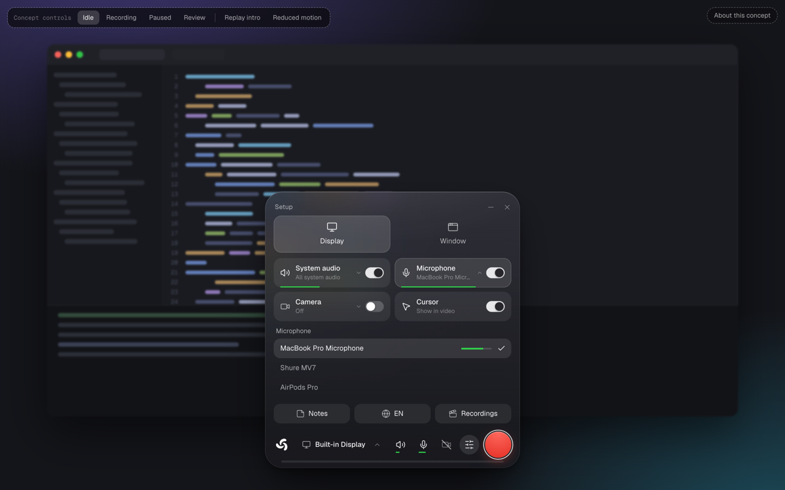
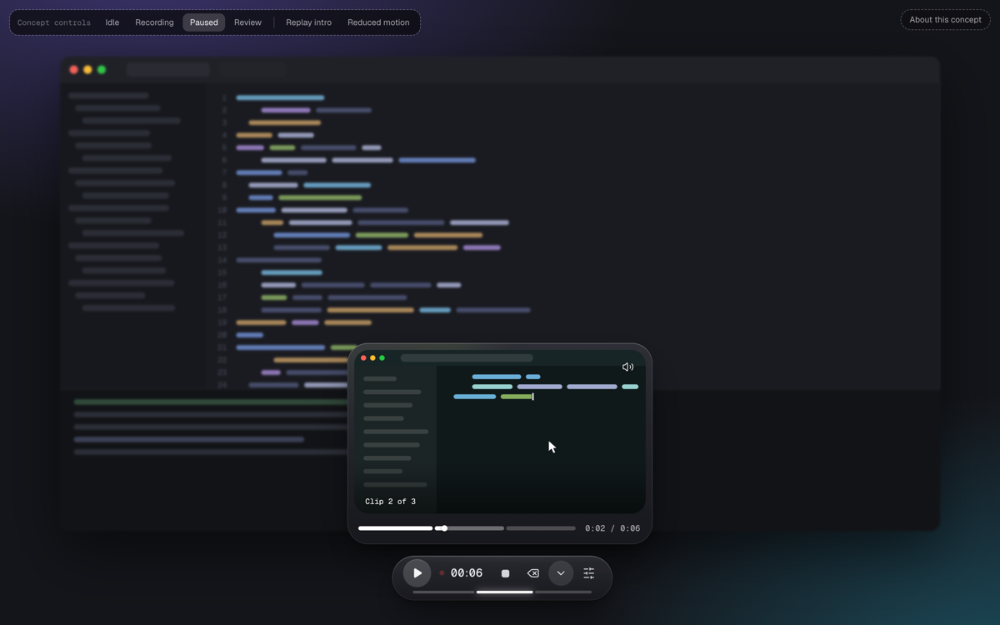
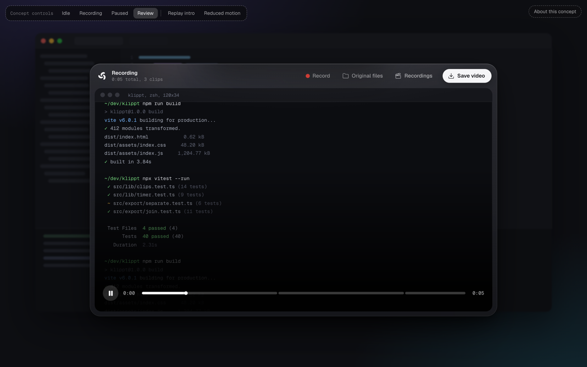
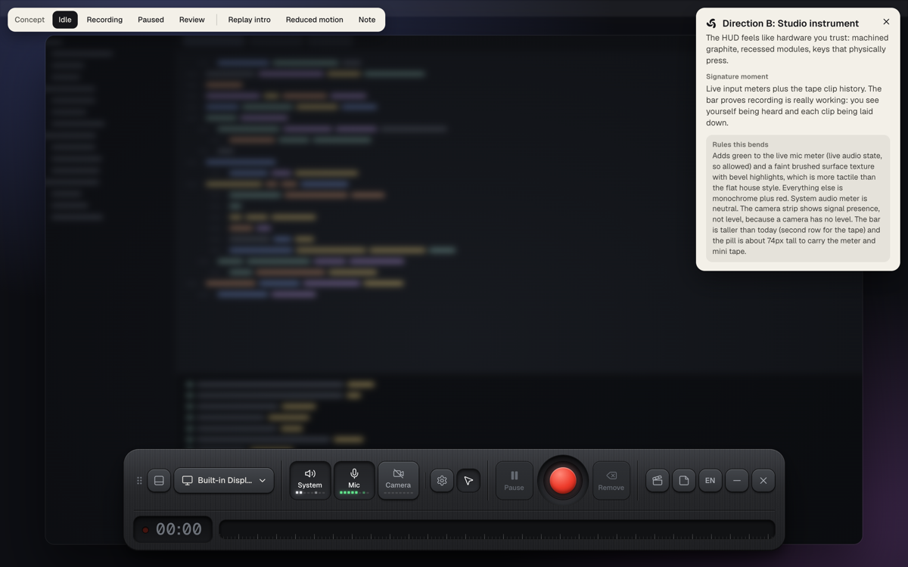
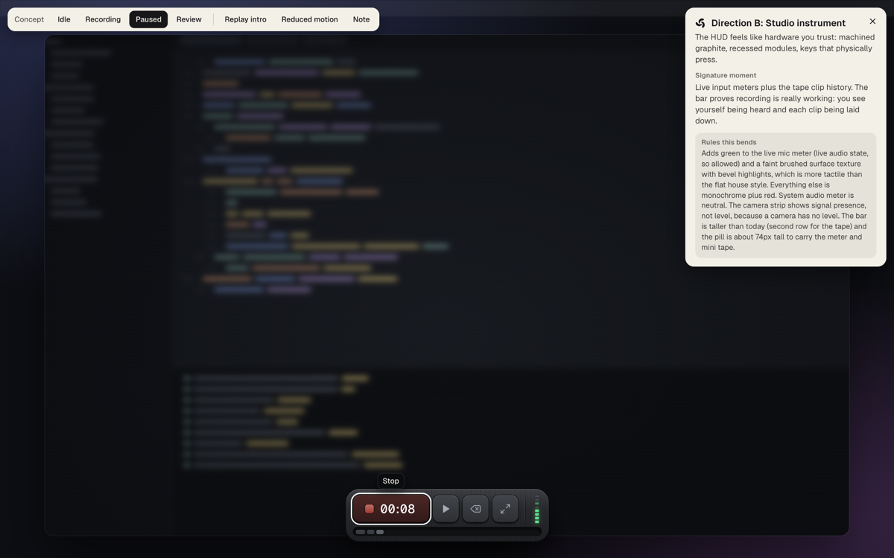
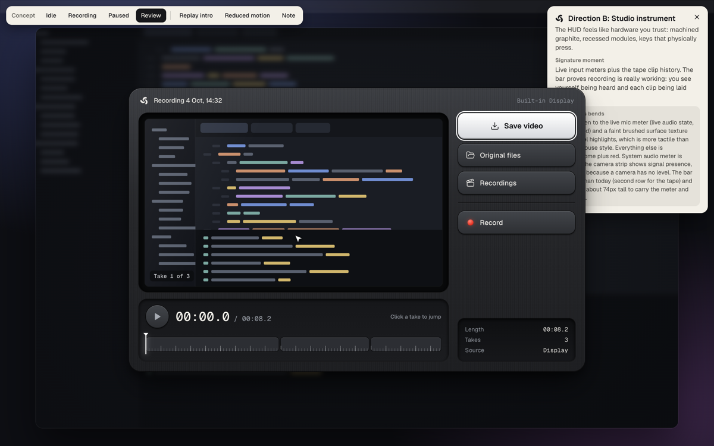
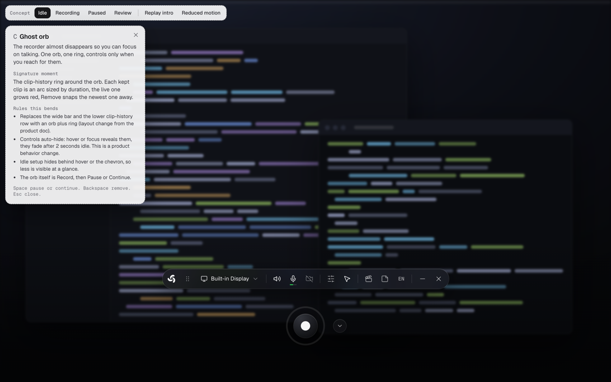
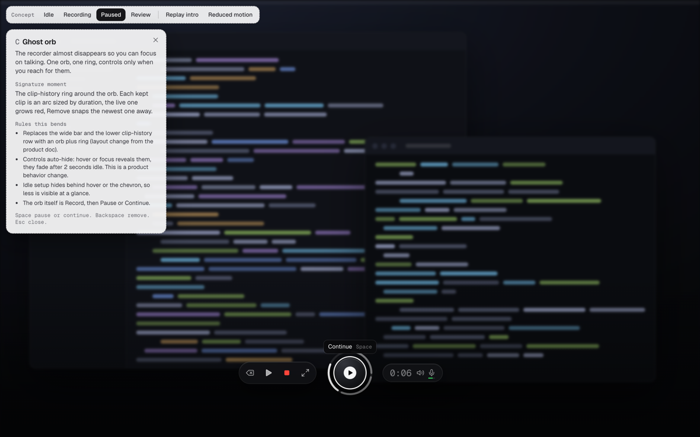
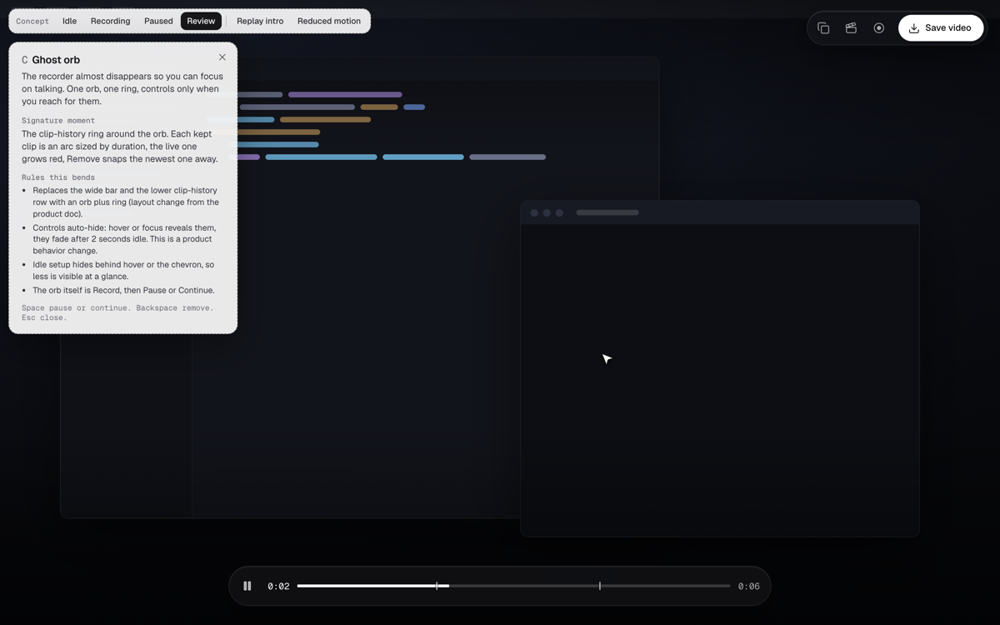

Klippt UI directions
Three clickable prototypes for the recorder HUD, review and export. Open one and try Record, Space, Backspace, Stop, then Save video. Nothing in the app has changed yet.
A
Liquid pill
One glass capsule that morphs. Pause is the big red button. While paused, the up arrow replays what you have recorded so far. Stop grows the capsule into the review window.
Picked direction.
- Signature
- The pill-to-review morph.
- Rules this bends
- None. Fits the current monochrome rules.



B
Studio instrument
A precision recording device. Machined graphite, keys that press, live input meters, clips laid down like tape.
- Signature
- Live mic meter and tape clip history: you see that you are being heard.
- Rules this bends
- Green mic meter, faint surface texture, taller bar and pill.



C
Ghost orb
The recorder almost disappears. One orb, clips as a ring around it, controls only when you reach for them.
- Signature
- The clip-history ring around the orb.
- Rules this bends
- Replaces the wide bar and clip row, auto-hides controls. A behavior change, not only a look.


